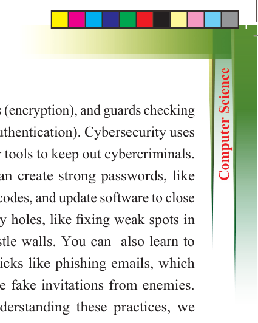
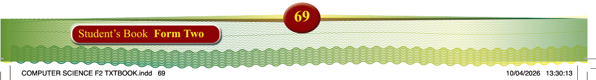

69
Student’s Book Form Two
Exercise 2.3
1. What is cyber ethics, and why is it important in the digital world?
2. Explain
the
term
“digital
footprint”. How can it affect a
person’s reputation?
3. What is plagiarism in the online
world, and why is it considered
unethical?
4. Why is it important to respect others’ privacy online? Give one
example of an unethical action
related to online privacy.
5. What does the principle of
“Intellectual Property Rights” mean in the context of digital
content?
6. How can individuals promote
ethical behaviour while using social media and other online
platforms?
Practices of cybersecurity
Cybersecurity practices are like a digital shield protecting our online world. They involve a combination of technical skills
and common-sense habits. Imagine a
city with strong walls (firewalls), hidden
tunnels (encryption), and guards checking
IDs (authentication). Cybersecurity uses similar tools to keep out cybercriminals.
You can create strong passwords, like
secret codes, and update software to close
security holes, like fixing weak spots in
the castle walls. You can also learn to
spot tricks like phishing emails, which
are like fake invitations from enemies.
By understanding these practices, we
become digital defenders, ensuring our
online experiences are safe and secure.
Basic cybersecurity measures
Basic cybersecurity measures help protect
personal information and devices from
online threats. The key actions include
the following:
(i)
Using strong, unique passwords
(ii)
Enabling two-factor authentication
(2FA) for added security
(iii) Regularly updating software and antivirus programs
(iv) Avoiding suspicious links or downloads
(v)
Being cautious when sharing
personal information online
(vi) Using secure Wi-Fi connections